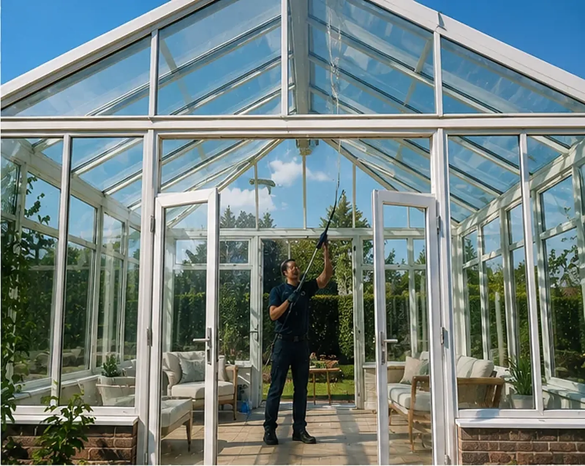
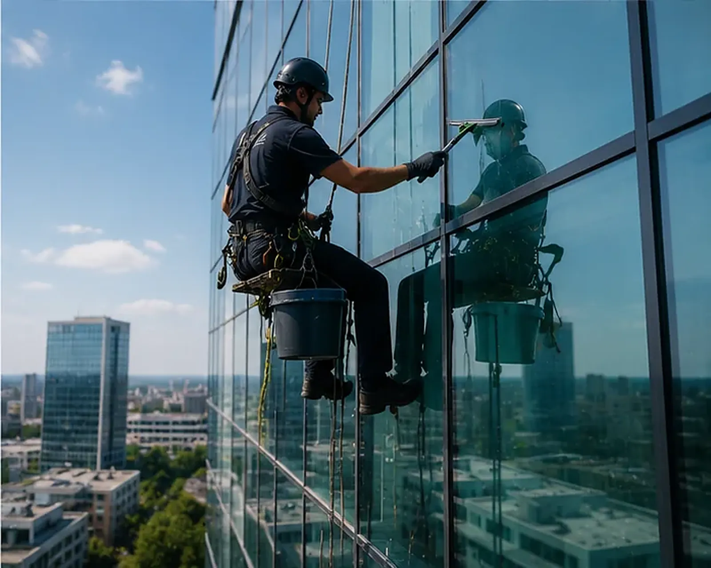
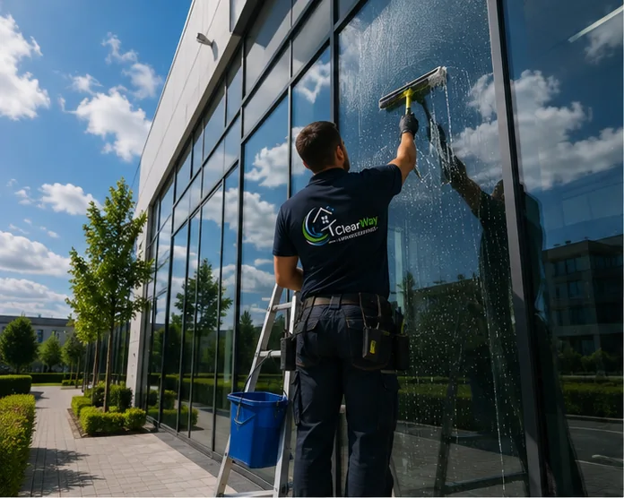
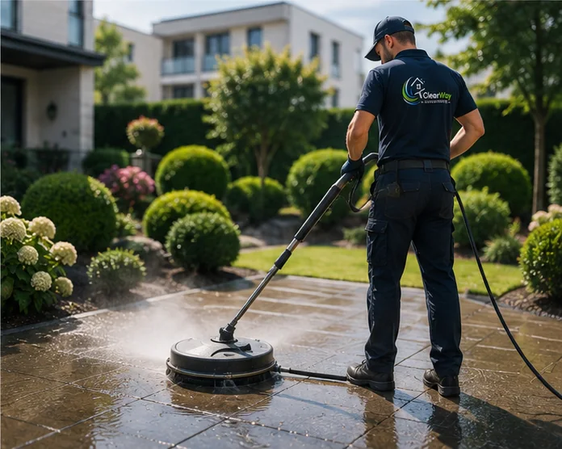
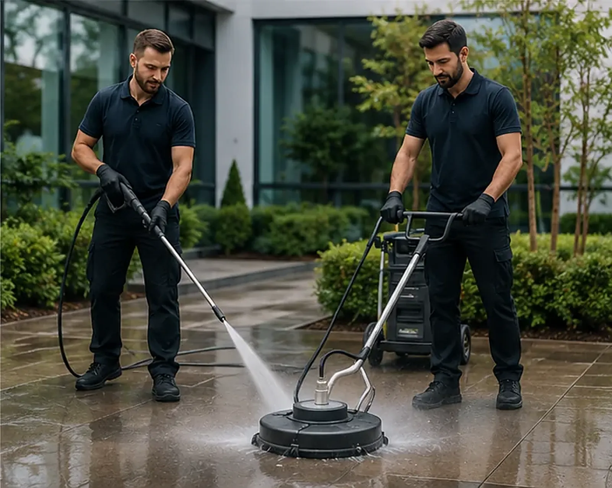
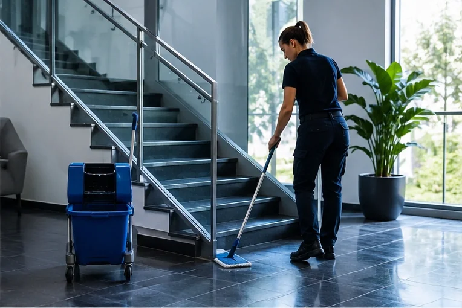
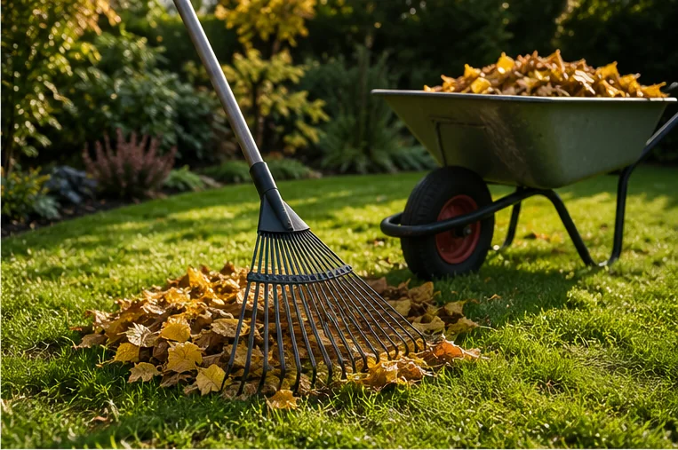
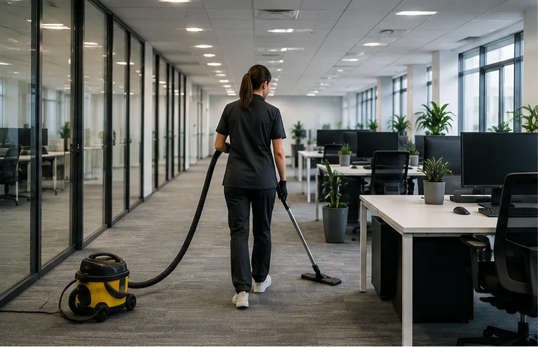
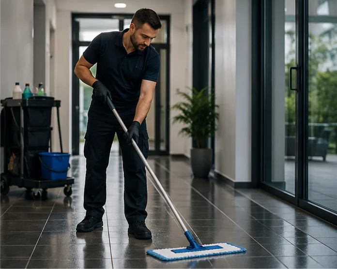

Fenster- & Glasreinigung
Fenster, Schaufenster, Glasfassaden, Wintergärten und Glasdächer – streifenfrei bis ins Detail.
Details zur Glasreinigung
Leistungen
Von der Glasfront bis zur Tiefgarage: ClearWay deckt die Reinigung und Pflege Ihrer Immobilie aus einer Hand ab – Sie sparen sich die Abstimmung mit mehreren Dienstleistern.
Überblick
Jede Leistung führen wir auch einzeln aus. Die meisten Kunden kombinieren jedoch zwei oder drei Bereiche – das spart Anfahrten und Abstimmung.
Reinigung ist Vertrauenssache – und Vertrauen entsteht nicht durch Hochglanz-Worte, sondern durch saubere Arbeit beim ersten Auftrag. Viele unserer Kunden haben mit einer einzelnen Leistung angefangen, etwa der Fensterreinigung, und uns danach Schritt für Schritt mehr Flächen anvertraut.
Alle Leistungen erbringen wir in Ludwigsburg und Umgebung mit eigenem Team und eigener Technik. Ob sich ein Einsatz bei Ihnen lohnt, sagen wir Ihnen ehrlich – auch dann, wenn die Antwort einmal „das brauchen Sie nicht“ lautet.

Fenster, Schaufenster, Glasfassaden, Wintergärten und Glasdächer – streifenfrei bis ins Detail.
Details zur Glasreinigung
Grünbelag, Schmutzfahnen und Verwitterung schonend entfernen – der erste Eindruck zählt.
Details zur Fassadenreinigung





Gut zu wissen
Das müssen Sie auch nicht. Beschreiben Sie uns einfach, was Sie stört – eine stumpfe Terrasse, ein dunkler Hauseingang, Schlieren auf der Glasfront. Wir sagen Ihnen ehrlich, welches Verfahren passt und was es kostet.
